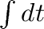
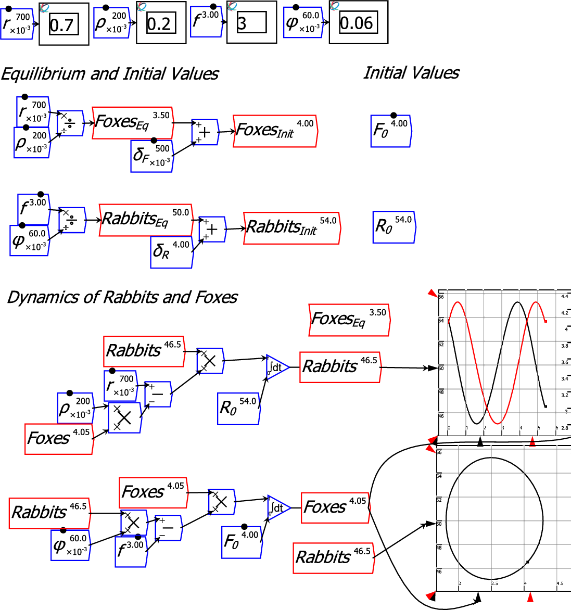
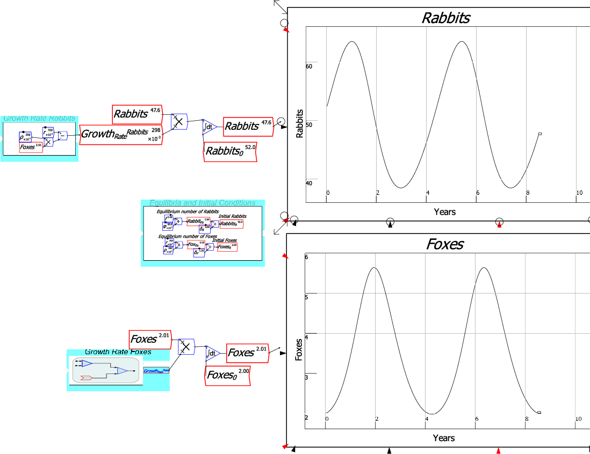
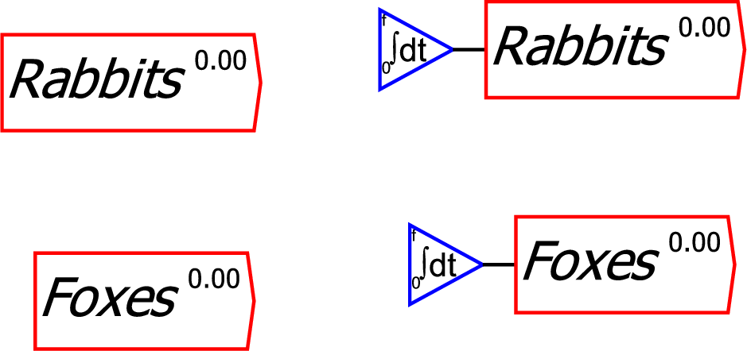
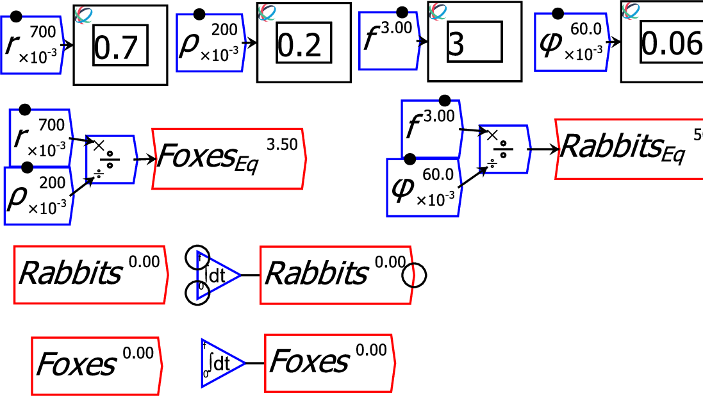
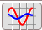

The first step in building the Rabbits and Foxes model in Minsky is to insert two integral blocks on the canvas--one for Rabbits and the other for Foxes. An integral block is inserted by clicking on the  operator. To alter its name from the generic ``int1'', either double-click on the widget, which brings up the context menu for integral blocks, or hover the mouse over the block and click the right-mouse button, and choose ``Edit'' to bring up the edit form (another method is to choose ``Rename all instances'' from the context menu). Name the two variables Rabbits and Foxes respectively, and you will have the following objects on your canvas:

As is typical of dynamic models, the rates of change of the variables Rabbits and Foxes depends on their current values. You therefore need to copy the variable names, which you do using the context menu command ``Copy item''. Do this and place both on the canvas:

Next add the parameters that determine the rates of growth and death of the two species. The non-zero equilibrium is set by the zeros of  and .
Finally, the equations for the rates of growth of the two species are wired up, and the model can be simulated.
If you don't want to display the complete equations on the canvas, you can use grouping to hide the complexity. The next figure illustrates several ways to use groups, and the feature that groups become transparent (and can be edited in situ) as the zoom level increases.
